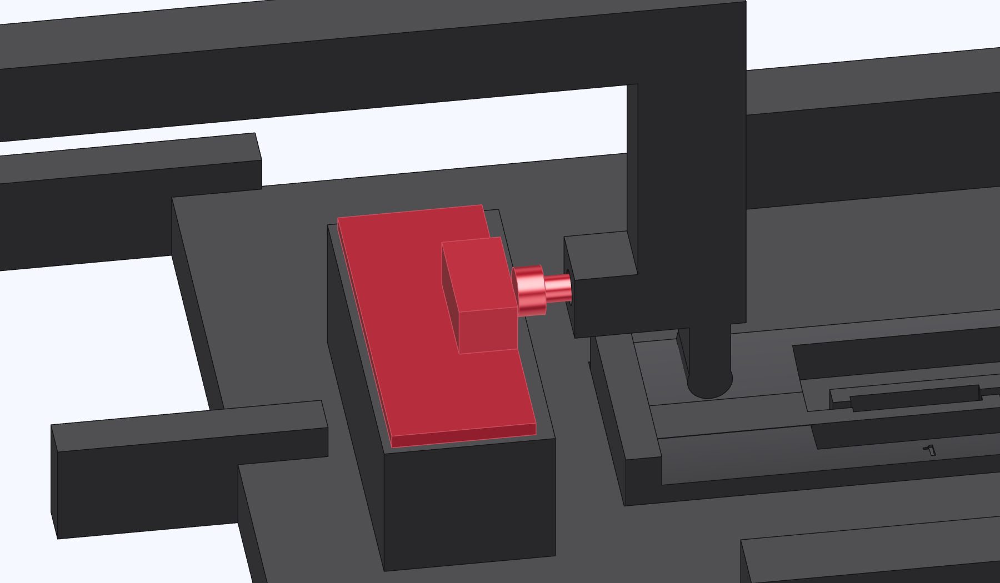

Fit the switch and striker
The switch faces the tube. The striker head faces back toward the switch as the sled approaches the mouth.

- Set the board on the cradle pad with the lever toward the tube. Fasten it with the 316 stainless M3 × 8 screws.
- Hand-thread the 304 stainless M3 × 12 into the finger, head toward the lever. Run it most of the way in. Final adjustment comes after the sled is coupled.
Check the switch by hand
The board sits flat and stays put. The lever moves freely and returns when you release it.